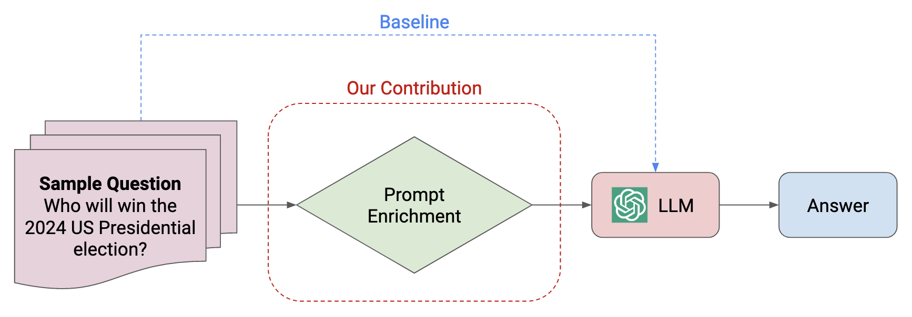
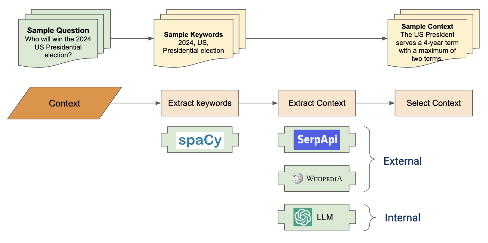
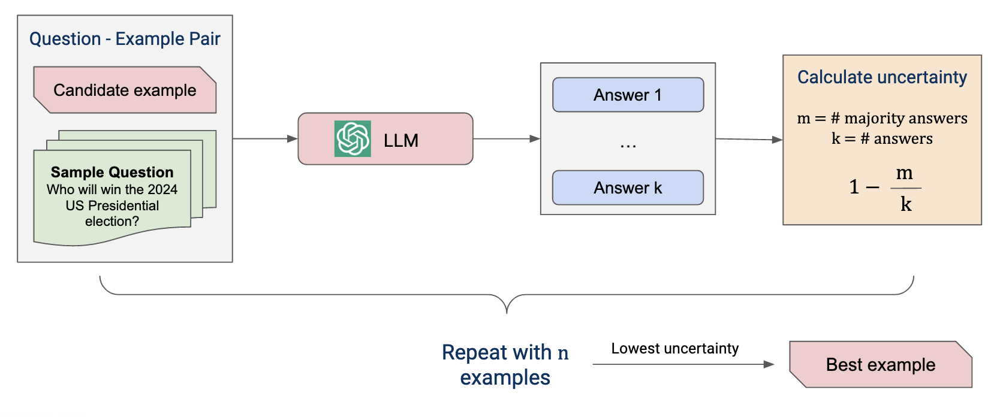
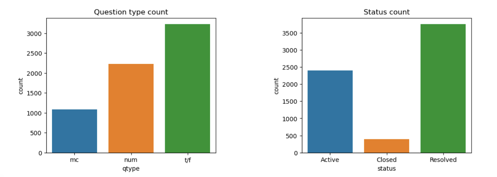

Predicting the future is notoriously difficult, but what if we could capture the knowledge embedded in large language models (LLMs) to make the task easier? Our project aims to improve LLM performance at forecasting tasks by converting simple questions into rich prompts with relevant context and examples. Our goal is to explore LLM effectiveness on forecasting tasks without the need for resource-intensive fine-tuning.
Pipeline
Our solution to this problem is a pipeline that automatically enriches simple prompts during a two-stage process. First, we explore context enrichment where we identify and attach internal and external context to a question in order to provide the LLM with more information about the question. Second, we use active prompt methodology to identify optimal examples for use with a given question. These examples are selected based on the degree to which they reduce model uncertainty when answering a question. The below diagram shows the end-to-end pipeline, as well as the baseline pipeline that we use for comparison.
Context Enrichment
We explored two means of context enrichment: internal and external. Internal context is information already known to the LLM. We extract this information by asking the LLM to identify entities, dates, and other important items in the text of a question, and then to provide definitions, history, and information on the relationships between each of the entities. We then use this internal context to enrich the original prompt. External context is similar, but drawn from external sources. For example, we using Wikipedia and Google search results to enrich the original prompt.
Active Prompt Example Selection
We used active prompt methodology, as described by Diao et al. (2023), to select optimal examples for use with a given question. The active prompt methodology is based on the idea that the LLM is most when it is provided with examples that reduce its uncertainty. We use the LLM to generate a set of candidate examples for a given question and then select the optimal examples from this set based on the degree to which they reduce model uncertainty.
Demo
The below video shows a short demonstration of the prompt enrichment pipeline in action. Each step of the demo shows the next prompt enrichment component.
Evaluation
Data
To evaluate pipeline performance, we use the Autocast dataset, as described Zou et al. (2022). The Autocast dataset includes a variety of true/false, multiple choice, and numeric forecasting questions crowd predictions. We use the crowd predictions as the target metric, specifically on "Active" questions (meaning those for which is not yet any answer).
Experimental Results
We evaluated the performance of our pipeline using several permutations of prompt enrichment. In-range prediction is defined percentage of pipeline predictions that fell within the defined acceptable range compared to the crowd forecasts. The range was necessary because crowd experts were not required to make only a single choice—they could hedge their prediction by probabilities to multiple choices.
In all, we found only marginal performance improvements over baseline. Given that there were only a total of 98 throughout experiments, the small changes between baseline and context may not be statistically meaningful. A table and chart of the are shown below.
We were surprised to see that adding in optimized examples actually reduced performance. We have several hypotheses for this, include that the model may have been taking past examples into account when answering new questions, despite specific not to in the system prompt.
Separately, we noticed that the system prompt has significant ramifications for whether context and examples improve baseline, for that matter on how well the baseline itself does. We experimented with a wide variety of system prompts and see this as an for further experimentation. A good system prompt that helps the LLM understand how to use context and examples is clearly important.
| Pipeline | % in-range predictions |
|---|---|
| Baseline | 27.55% |
| Context | 27.55% |
| Example | 24.49% |
| Context + example | 28.57% |
| External context | 30.61% |
Conclusion
Overall, we found minimal increases in forecasting performance when prompt engineering for additional context and examples. believe this is due to the small sample size of the Autocast dataset, and the fact that the crowd predictions are not accurate may not be an ideal truth proxy. We did, however, learn a great deal about the power of LLMs, prompt engineering, and active learning given minimal user queries.